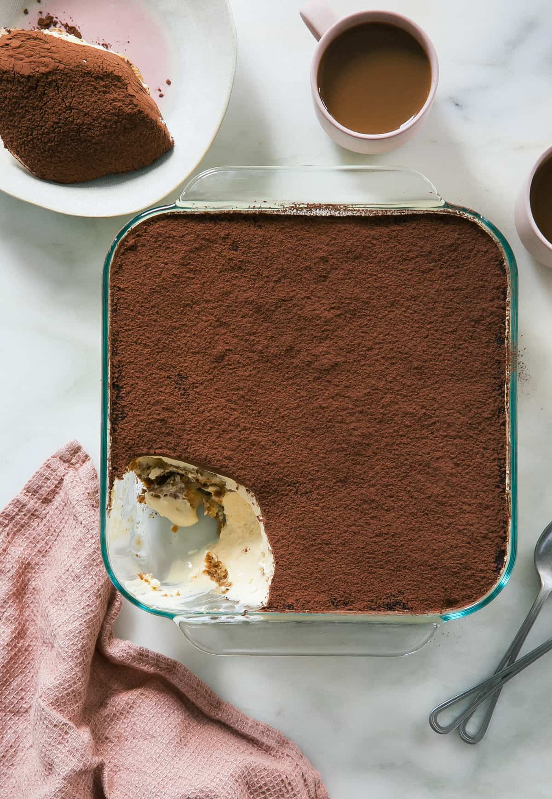

Tiramisu

Serves: 8 | Total time: 4 hrs 15 min
Ingredients
Filling:
- 4 large egg yolks, cold straight from the fridge
- 3 tablespoons dark rum
- 1/4 cup heavy cream, cold straight from the fridge
- 1/2 cup granulated sugar (100g)
- 1/4 teaspoon kosher salt
- 16 ounces mascarpone
Assembly:
- 1 3/4 cup strongly brewed coffee
- 24 lady fingers, (from a 7-ounce package)
Topping:
- 2 tablespoons unsweetened cocoa powder
Steps
- In the bowl of a stand-up mixer fixed with the paddle attachment (or a large bowl with an electric hand mixer), add all of the filling ingredients.
- Beat all of the ingredients together for 1 minute; scrape down the sides and then beat again for an additional minute, being sure NOT to over beat it. Stick to the two minutes total.
- Grab your baking dish. Transfer the strongly brewed coffee to a medium and or small bowl. Working one at a time, quickly dip each lady finger into the coffee. Be sure to not over saturate the ladyfinger with the coffee because then they’ll get a bit too soggy. All you need is a quick dip into the coffee. Arrange the dipped ladyfingers in the baking dish, side by side. I ended up filling up the empty spaces by snapping some of the lady fingers into different lengths.
- Add a few scoops of the filling on top and spread into a 1/4-inch thick layer. Add more filling if you need to.
- Dip the remaining lady fingers in the coffee and arrange them so there are no gaps. Add the remaining filling on top and spread it into a nice and neat final layer. Cover the dish with plastic wrap so it hits the surface of the tiramisu; transfer to the fridge to chill for at least 3 hours, ideally overnight.
- To serve, remove the plastic wrap and discard. If the plastic wrap has left any indentations in the topping, you can always smooth it out with an offset spatula. Sift the cocoa powder on top, applying a generous coating of it. Wipe the rim of the baking dish and serve.